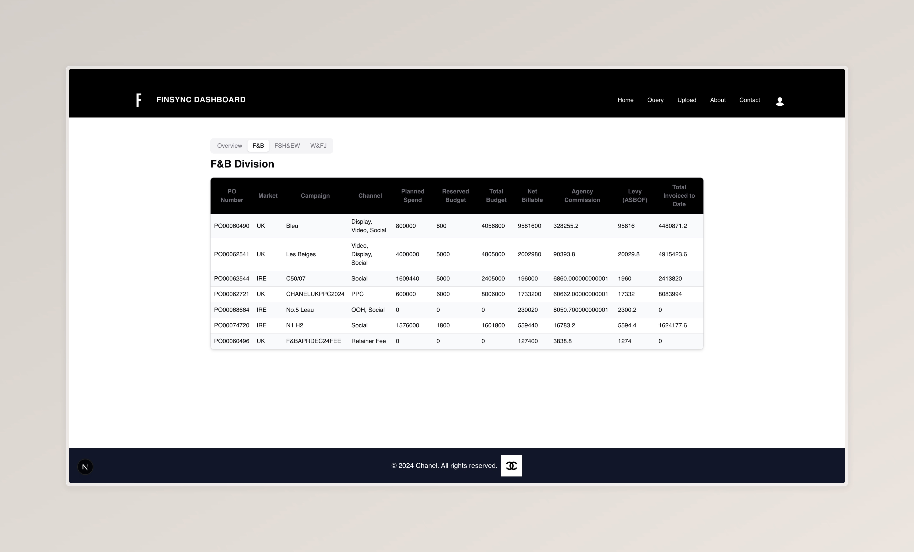

Implementation
Frontend & Backend
Frontend Implementation
Explanation of Key Frontend Features
Graphing Capabilities: Processing Summary Excel File
The Divison Tables rely on data extracted from a summary Excel file stored in Azure Blob Storage. This file is processed on the client-side using the Microsoft Blob SDK and parsed into structured data for visualization. Below is a detailed explanation of how the Excel file is processed into a usable format for the frontend tables
Step 1: Raw Data Extraction
The Excel file is downloaded from Azure Blob Storage and read as a raw 2D array of strings, where each row
represents
a line in the spreadsheet and each column represents a cell. This raw data is passed to the
parseExcelData
function for processing.
const dataRows = rawData.slice(2); // Skip header rows
if (!rawData || rawData.length < 3) return []; // Handle empty or invalid data
Step 2: Campaign Data Extraction
Each row in the spreadsheet is processed to extract campaign-level financial metrics. The function distinguishes between three types of rows:
- Main Campaign Rows: Rows with a PO number.
- Sub-Campaign Rows: Rows with a name but no PO number.
- Channel Rows: Rows with channel-specific financial data.
Main Campaign Rows
If a row contains a PO number, it is treated as a main campaign. Financial metrics are extracted, and the campaign is added to the list.
if (row[0]) {
campaigns.push({
poNumber: String(row[0] || ""),
name: String(row[1] || ""),
channels: [{
name: String(row[2] || ""),
financials: { ...financials },
}],
financials: { ...financials },
market: String(row[12] || ""),
});
}
Sub-Campaign Rows
If a row has a name but no PO number, it is treated as a sub-campaign. The function identifies the parent campaign by searching previous rows for a main campaign. The sub-campaign is then added to the list.
else if (row[1] && row[2]) {
let parentName = "";
for (let j = i - 1; j >= 0; j--) {
if (dataRows[j] && dataRows[j][0] && dataRows[j][1]) {
parentName = String(dataRows[j][1] || "");
break;
}
}
campaigns.push({
poNumber: "",
name: String(row[1] || ""),
channels: [{
name: String(row[2] || ""),
financials: { ...financials },
}],
financials: { ...financials },
market: String(row[12] || ""),
isSubCampaign: true,
parentCampaignName: parentName,
});
}
Channel Rows
If a row contains channel-specific data but no campaign name or PO number, it is treated as a channel row. The financial metrics are added to the most recent campaign, and the campaign totals are updated.
else if (row[2] && campaigns.length > 0) {
const lastCampaign = campaigns[campaigns.length - 1];
lastCampaign.channels.push({
name: String(row[2] || ""),
financials: { ...financials },
});
// Update campaign totals
lastCampaign.financials.netBillable += financials.netBillable;
lastCampaign.financials.agencyCommission += financials.agencyCommission;
lastCampaign.financials.invoiceVal += financials.invoiceVal;
}
Step 3: Financial Metrics Extraction
For each row, financial metrics are extracted and converted into numbers. If a cell is empty, the value
defaults
to 0.
const financials: FinancialMetrics = {
netBillable: Number(row[4]) || 0,
agencyCommission: Number(row[5]) || 0,
levyASBOF: Number(row[6]) || 0,
invoiceVal: Number(row[7]) || 0,
plannedSpend: Number(row[8]) || 0,
reservedBudget: Number(row[9]) || 0,
totalBudget: Number(row[10]) || 0,
chanelBudget: Number(row[11]) || 0,
};
Step 4: Returning Structured Data
After processing all rows, the function returns a structured list of campaigns, each containing:
- PO Number: Unique identifier for the campaign.
- Name: Campaign name.
- Channels: List of channels with financial data.
- Financial Metrics: Aggregated financial data for the campaign.
- Market: Market associated with the campaign.
- Parent Campaign Name: For sub-campaigns.

Backend Implementation
Explanation of Key Backend Features
1. BlobTriggerFunction
The BlobTriggerFunction is an Azure Function that processes files uploaded to the
subcontractor-documents container in Azure Blob Storage. It is triggered automatically whenever a
new file is uploaded, and based on the file name, it calls specific processing functions to handle the file.
Key Features:
- Automatic Trigger: The function is triggered by new file uploads to the specified container.
-
File-Specific Processing: Calls different functions (e.g.,
process_unbilled,process_budget_tracker) based on the file name. - Blob Service Integration: Uses the Azure Blob Service Client to interact with Blob Storage.
Implementation Details:
The function uses the @blob_trigger decorator to specify the container path and connection
string.
Below is a snippet showing how the function is triggered and how it processes files:
@app.blob_trigger(arg_name="myblob", path="subcontractor-documents/{name}",
connection="AzureWebJobsStorage")
def BlobTriggerFunction(myblob: func.InputStream):
logging.info(f"Processing file: {myblob.name}")
# Call specific processing functions based on file name
if "Chanel UK Billed.xlsx" in myblob.name:
process_unbilled(myblob.name, blob_service_client)
elif "Budget Tracker.xlsx" in myblob.name:
process_budget_tracker(myblob.name, blob_service_client)
2. BlobIngestTrigger
The BlobIngestTrigger is an Azure Function that ingests CSV files into Azure Data Explorer
(ADX).
It is triggered automatically whenever a new CSV file is uploaded to the csv-conversion
container.
The function dynamically creates tables in ADX based on the file name and ingests the data.
Key Features:
- Automatic Trigger: The function is triggered by new CSV file uploads to the specified container.
- ADX Integration: Uses the Azure Data Explorer (ADX) Python SDK to ingest data into ADX tables.
- Dynamic Table Creation: Dynamically creates tables in ADX based on the file name.
Implementation Details:
The function uses the @blob_trigger decorator to specify the container path and connection
string.
It dynamically creates tables in ADX and ingests data using the ADX Python SDK. Below is a snippet showing the
key parts of the implementation:
@app.blob_trigger(arg_name="myblob", path="csv-conversion/{name}", connection="AzureWebJobsStorage")
def blob_ingest_function(myblob: func.InputStream):
logging.info(f"New CSV detected: {myblob.name}")
# Extract table name from file name
table_name = myblob.name.replace(".csv", "").replace(" ", "_")
# ADX Ingestion setup
ingestion_props = IngestionProperties(
database=os.environ["ADX_DATABASE"],
table=table_name,
data_format=DataFormat.CSV,
additional_properties={"createTable": True}
)
# Start ingestion
ingest_client.ingest_from_blob(BlobDescriptor(blob_url_with_sas, blob_size), ingestion_properties=ingestion_props)
logging.info(f"Ingestion for table {table_name} started.")
Data Ingestion Workflow
The diagram below shows how the function is triggered by an Excel file upload, dynamically creates a table in ADX, and ingests the data into the table.